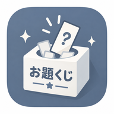

お題くじ｜キャラクターデザイン・イラストのお題メーカー
服ジャンル・世界観・モチーフなどを組み合わせて、
キャラクターデザインやイラストのお題をランダムに生成できる無料のお題メーカーです。
※「お題管理」でチェックが入っているお題のみ、くじに反映されます。
今回くじに入れるカテゴリ
お題くじの使い方
1. カテゴリを選ぶ
「服ジャンル」「世界観」「モチーフ」「追加縛り」から、 くじに入れたいカテゴリを選びます。
2. お題を引く
「お題を引く」ボタンを押すと、 選択したカテゴリからランダムにお題が生成されます。
3. 気に入ったお題を固定する
気に入ったお題は「固定する」を押すことで残したまま、 ほかのお題だけを引き直せます。
4. 自分好みにお題を管理する
「お題を管理する」から、使いたいお題のON・OFFを変更したり、 自分で新しいお題を追加したりできます。
こんな使い方ができます
キャラクターデザインの練習に
ランダムに出た服ジャンル・世界観・モチーフを組み合わせて、 普段は思いつかないキャラクターをデザインできます。
イラストのお題探しに
「何を描こう？」と迷ったときに、お題を引くだけで イラスト制作のきっかけを作れます。
苦手なジャンルへの挑戦に
普段あまり描かない服装や世界観が出ることで、 新しいデザインや表現を練習するきっかけにもなります。
SNSのお絵描き企画にも
出てきたお題をもとに作品を作ったり、 友達と同じ条件でキャラクターを考えたりして楽しめます。
このサイトについて
「お題くじ」は、キャラクターデザインやイラスト制作の アイデア出しを手助けする無料のお題メーカーです。
服ジャンル・世界観・モチーフ・追加縛りをランダムに組み合わせることで、 普段とは違ったデザインや、新しい創作のきっかけを作ることができます。
お題は自由にON・OFFできるほか、 自分で新しいお題を追加してカスタマイズすることもできます。
よくある質問
無料で使えますか？
はい。「お題くじ」は無料で利用できます。 キャラクターデザインやイラスト制作のお題探しに自由にお使いください。
出たお題を使って描いた作品をSNSに投稿してもいいですか？
はい。お題くじで生成したお題をもとに制作した作品は、 SNSなどに自由に投稿していただけます。
自分でお題を追加できますか？
はい。「お題を管理する」から、自分で新しいお題を追加できます。 最初から登録されているお題のON・OFFも変更できます。
スマートフォンでも使えますか？
はい。スマートフォンのブラウザから利用できます。 ホーム画面に追加して、アプリのように使用することもできます。
自分で追加したお題はどこに保存されますか？
追加したお題やON・OFFの設定は、お使いのブラウザ内に保存されます。 サイトの運営者に入力したお題が送信されることはありません。